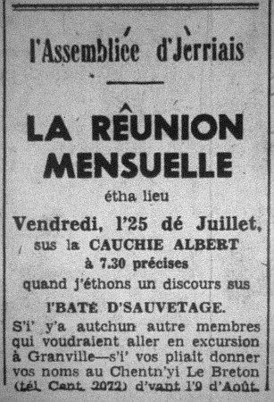

L'Assembliée d'Jèrriais
Sus l'Baté d'Sauv'tage
 Pour la rêunion du 25 dé juillet à bein près 70 membres lus rêunîtent sus la Caûchie Albert. Les rapports du mais d'mai et juin futent lius et chinq nouvieaux membres fûtent êlus. Pour l'amour d'avanchi d'vant la niet, les membres filîtent lé long d'la caûchie, et eune chînquantaine profitîdrent d'aller pour un viage sus l'Baté d'Sauv'tage. Ch'tait eune opportunité qué nou n'a pas souvent, mais ch'en 'tait ieune qui valait bein la peine. Touos lus y pliûtent hardi.
Pour la rêunion du 25 dé juillet à bein près 70 membres lus rêunîtent sus la Caûchie Albert. Les rapports du mais d'mai et juin futent lius et chinq nouvieaux membres fûtent êlus. Pour l'amour d'avanchi d'vant la niet, les membres filîtent lé long d'la caûchie, et eune chînquantaine profitîdrent d'aller pour un viage sus l'Baté d'Sauv'tage. Ch'tait eune opportunité qué nou n'a pas souvent, mais ch'en 'tait ieune qui valait bein la peine. Touos lus y pliûtent hardi.
Lé viage

Lé Pilote Larbalastier 'tait en chèrge, mais l'Président, l'Sieur C. P. Billot, pathaîssait tout à fait à s'n aise à gouverner l'baté jusqu'au Pignonet, tout près d'Nièrmont. Quand j'vînmes là, tout près d'eune bouie, iun d'l'êtchipe tithit un filain dé s'cours pour nos montrer comment qu'i' faithaient pour rendre s'cours au monde en dêtresse. en nos en r'vémant pour la caûchie les garçons prîntent lus tou à la barre étout et en 'taient touos ordgilleurs. La mé 'tait bein calme sinon quand nou rencontrir le St. Patrick et l'affaithe roulit un mio pour tchiques minutes. Les autres membres de l'êtchipe avec nous 'taient Mêssieux E, Grandin, R.J. Nicolle, Bob Talbot, W. Coombs et R. Davey.
Lé discours
; l'êtchie (qui donnent lus temps tout à fait grâtis) font quand i' sont app'lés.
Lé Sieur R.J.Nicolle nos dit comment qu'i' souongnaient les naufragis un coup sauvés, et nos racontit plusieurs dé lus expériences sus l'ieau.
Lé Cap'taine E.J. Syvret, O.B.E., nos dit qué dans les 50 ans qu'il avait 'té en mé il avait réalisé la valeur des batieaux d'sauv'tage, et nos dit comment qu'les siens qui sont volontaithes dé donner lus temps prennent dé grandes risques pour êprouver à sauver les gens en dêtresse. Ch'est bin seux qué nou n'peut pon être ermèrciants assez à ches mêssieux-'chîn - pas reinque ès siens d'Jerri, mais partout l'monde.
D'vant qu'L'Assembliée s'dispersîsse lé Président èrmèrcyit les Mêssieux Larbalestier et Nicolle et touos les siens qu'avaient aîdgi sus l'baté, et l'Cap'taine Syvret pour san discours.
Ch'fut eune séthée tout à fait difféthente qué d'amors, mais ieune qué nou n'oubliétha pon pour bein longtemps, ch'est seux.
Evening Post 2/8/1958
Viyiz étout: